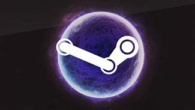
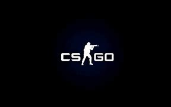
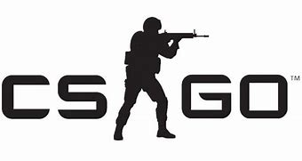

STEAM DEFINITION
steam is a video game digital distribution service by Valve. It was launched as a standalone software client in September 2003 as a way for Valve to provide automatic updates for their games, and expanded to include games from third-party publishers. Steam has also expanded into an online web-based and mobile digital storefront. Steam offers digital rights management (DRM), server hosting, video streaming, and social networking services. It also provides the user with installation and automatic updating of games, and community features such as friends lists and groups, cloud storage, and in-game voice and chat functionality. The software provides a freely available application programming interface (API) called Steamworks, which developers can use to integrate many of Steam's functions into their products, including in-game achievements, microtransactions, and support for user-created content through Steam Workshop. Though initially developed for use on Microsoft Windows operating systems, versions for macOS and Linux were later released. Mobile apps were also released for iOS, Android, and Windows Phone in the 2010s. The platform also offers a small selection of other content, including design software, hardware, game soundtracks, anime, and films. The Steam platform is the largest digital distribution platform for PC gaming, holding around 75% of the market share in 2013.[2] By 2017, users purchasing games through Steam totaled roughly US$4.3 billion, representing at least 18% of global PC game sales.[3] By 2019, the service had over 34,000 games with over 95 million monthly active users. The success of Steam has led to the development of a line of Steam Machine microconsoles, which include the SteamOS operating system and Steam Controllers, Steam Link devices for local game streaming, and the upcoming Steam Deck, a handheld personal computer system tailored for running Steam games.
CSGO DEFINITION
Counter-Strike: Global Offensive (CS:GO) is a multiplayer first-person shooter developed by Valve and Hidden Path Entertainment. It is the fourth game in the Counter-Strike series. Developed for over two years, Global Offensive was released for Windows, macOS, Xbox 360, and PlayStation 3 in August 2012, and for Linux in 2014. Valve still regularly updates the game, both with smaller balancing patches and larger content additions. The game pits two teams, Terrorists and Counter-Terrorists, against each other in different objective-based game modes. The most common game modes involve the Terrorists planting a bomb while Counter-Terrorists attempt to stop them, or Counter-Terrorists attempting to rescue hostages that the Terrorists have captured. There are eight official game modes, all of which have distinct characteristics specific to that mode. The game also has matchmaking support that allows players to play on dedicated Valve servers, in addition to community-hosted servers with custom maps and game modes. A battle-royale game-mode, "Danger Zone", was introduced in December 2018. Global Offensive received positive reviews from critics on release, who praised the game for its gameplay and faithfulness to the Counter-Strike series, though it was criticized for some early features and the differences between the console and PC versions. Since its release, it has drawn in an estimated 11 million players per month, and remains one of the most played games on Valve's Steam platform. In December 2018, Valve transitioned the game to a free-to-play model, focusing on revenue from cosmetic items. The game has an active esports scene, continuing the history of international competitive play from previous games in the series. Teams compete in professional leagues and tournaments, and Global Offensive is now one of the largest global esports.
CSGO GAMEPLAY
Global Offensive, like prior games in the Counter-Strike series, is an objective-based, multiplayer first-person shooter. Two opposing teams, the Terrorists and the Counter-Terrorists, compete in game modes to repeatedly complete objectives, such as securing a location to plant or defuse a bomb and rescuing or capturing hostages.[1][2] At the end of each short round, players are rewarded based on individual and team performance with in-game currency to spend on other weapons or utility in subsequent rounds.[3] Winning rounds generally rewards more money than losing does, and completing map-based objectives, including killing enemies, gives additional cash bonuses.[1][4] Global Offensive has nine official game modes: Competitive, Casual, Deathmatch, Arms Race, Demolition, Wingman, Flying Scoutsman, Retakes and Danger Zone.[5][6][7][8] Competitive mode, the primary gameplay experience,[9] pits two teams of five players against each other in a best-of-30 match.[10] When playing Competitive, players have a skill rank based on an Elo rating system and are paired with and against other players around the same ranking.[1] The Casual and Deathmatch modes are less serious than Competitive mode and do not register friendly fire. Both are primarily used as a practice tool.[11][12] Arms Race and Demolition, both based on mods for previous iterations in the series, were added alongside eight new maps for the modes.[1] Arms Race is the Global Offensive variant of the "Gun Game" mode in other games in the series.[1] Demolition is another bomb defusal game mode, with gun upgrades only given to players who killed an enemy in the previous round.[1] Wingman is a two-on-two bomb defusal game mode taking place over sixteen rounds. Similar to Competitive, players are paired based on a dynamic skill ranking.[7] The Flying Scoutsman mode equips players with only a SSG 08 (known in-game as the "Scout") and a knife in a low-gravity map.[13] Retakes is a gamemode where three Terrorists will defend an already planted C4 against 4 Counter-Terrorists. Players will also be able to choose a loadout card at the beginning of each round to retake (or defend) the bomb site.[8] Danger Zone is a battle-royale mode in which up to 18 players search for weapons, equipment, and money in an effort to be the last person or team remaining.[14][15] Valve also included an offline practice mode designed to help new players learn how to use guns and grenades, called the Weapons Course.[16] Apart from the Weapons Course, all other game modes can be played online or offline with bots.[6] There are five categories of purchasable weaponry: rifles, submachine guns, "heavy" weaponry (light machine guns and shotguns), pistols, and grenades.[17] Each gun in Global Offensive has a unique recoil pattern that can be controlled, a gameplay feature the series has long been associated with.[18][19] Global Offensive also introduced weapons and equipment not seen in previous installments, including tasers and an incendiary grenade.[20] In-game matchmaking is supported for all online game modes and is managed through the Steam platform.[21] The game servers run Valve Anti-Cheat to prevent cheating.[22] One form of matchmaking in Global Offensive to prevent cheating, Prime Matchmaking, hosts matches that can only be played with other users with the "Prime" status. This feature also results in more equal matches as there are fewer "smurfs" in these matches.[23] The PC version of Global Offensive also supports private dedicated servers that players may connect to through the community server menu in-game. These servers may be heavily modified and can drastically differ from the base game modes. There have been many community made mods for the game, one of the popular ones being "kz", a mod that makes players complete obstacle courses requiring advanced strafing and jumping techniques.[24]
CSGO : DEFINITION AND RELEASE

Counter-Strike: Global Offensive is the sequel to the popular first-person shooter Counter-Strike: Source, developed by Valve. Global Offensive's development began when Hidden Path Entertainment attempted to port Counter-Strike: Source onto video game consoles.[1][25] During its development, Valve saw the opportunity to turn the port into a full game and expand on the predecessor's gameplay. Global Offensive began development in March 2010, and was revealed to the public on August 12, 2011.[26] The closed beta started on November 30, 2011, and was initially restricted to around ten thousand people who received a key at events intended to showcase Global Offensive. After issues with client and server stability were addressed, the beta was opened up to progressively more people,[27] and at E3 2012, Valve announced that Global Offensive would be released on August 21, 2012, with the open beta starting roughly a month before that.[27] Before the public beta, Valve invited professional Counter-Strike players to play-test the game and give feedback.[28] There were plans for cross-platform multiplayer play between Windows, OS X, Linux, Xbox 360, and PlayStation 3 players, but this was ultimately dropped so that the PC and Mac versions could be actively updated.[29] On August 21, 2012, the game was publicly released on all platforms except Linux,[30] which would not be released until September 23, 2014.[31] Since the initial release of Global Offensive, Valve has continued to update the game by introducing new maps and weapons, game modes, and weapon balancing changes.[32] One of the first major additions to the game post-release was the "Arms Deal" update. Released on August 13, 2013, the update added cosmetic weapon finishes, or skins, to the game. These items are obtainable by unboxing cases using in-game keys, accessible through in-game microtransactions.[33][25] Global Offensive has Steam Workshop support, allowing users to upload user-created content, such as maps, weapon skins, and custom game-modes. Some popular user-created skins are added to the game and are obtainable from unboxing them in cases.[34] The creators of the skins are paid when their item is added to a case.[35] These skins helped form a virtual economy in Global Offensive, leading to the creation of gambling, betting, and trading sites.[36] The addition of skins and the associated virtual economy launched Global Offensive's player count past the other games in the Counter-Strike series and is one of the most important updates in the game's history.[25][37] Events called "Operations" are held occasionally and can be accessed through purchasable expansion packs in the form of "operation passes." These passes grant access to operation objectives which are spread over different game modes, such as Arms Race and Deathmatch,[38] or in operation-specific game modes, first seen in Operation Hydra, released in May 2017.[39] Completing these challenges rewards the player with XP and the ability to upgrade the operation "coin." The maps in the operations are community made, meaning some of the revenue made goes towards the map designers.[38][40] An update in October 2014 added "music kits", which replace the default in-game music with music from soundtrack artists commissioned by Valve. If a player with a music kit equipped becomes the round's most valuable player, their music will play for others at the end of the round. There is a feature that allows kits to be borrowed, and kits can be sold and exchanged through the Community Market.[41] In 2016, the game saw two remakes of original Counter-Strike maps, as well as the introduction of Prime matchmaking and additional items. As a part of the Operation Wildfire promotion, Nuke was remade and re-released in February with the primary goals being to balance the map and make it more aesthetically pleasing.[42] In April, Prime matchmaking was added to the game. To partake in this mode, the user had to have a verified phone number connected to their account. It was introduced in an attempt to prevent legitimate players from playing with cheaters or high-skilled players playing on alternative, lower ranked accounts, a practice colloquially known as "smurfing".[23] Inferno, another original map, was re-released in October. Valve said they had three reasons behind the remake: "to improve visibility; to make it easier to move around in groups; and to tune it with player feedback."[43] Also in October, consumable items called graffiti were added to the game. These items replaced a feature present in the previous iterations of the series called sprays. Previously, players could customize their sprays. Graffiti ideas can be uploaded to the Steam Workshop in the similar manner as gun skins and players can buy and trade the existing graffiti in game.[44] One month later, glove skins were added.[45] In September 2017, Valve Company worked with the publisher Perfect World to release Global Offensive in mainland China. Chinese citizens, with their identification verified, can receive the game for free and earn Prime matchmaking status immediately.[46] The game is played through Perfect World's launcher and contains numerous exclusive changes to the game, including the censorship of skulls and other symbols.[47][48] Some other changes were in the cosmetics in certain maps, for example, the hammer and sickle on Cache and Train were removed.[49] In preparation for the release, multiple cities in China celebrated and heavily promoted its upcoming release.[47][48] Users who played the game during its launch month received free promotional cosmetics.[49][50] In compliance with Chinese law, Valve also had to disclose its loot box gambling odds.[51] In November 2017, an update to the competitive matchmaking was announced. Called the "Trust Factor", it meant a player's "Trust Factor" would be calculated through both in-game and Steam-wide actions. Factors such as playtime on Global Offensive, times a user has been reported for cheating, playtime on other Steam games, and other behaviors hidden by Valve are taken into consideration when a user's "Trust Factor" is developed. This was done in an attempt to let the community bond back together in matchmaking, as Prime matchmaking separated Prime and non-Prime players from each other. Valve will not let users view their "Trust Factor" or reveal all of the factors deciding one's "Trust".[52][53][54] In August 2018, an offline version of the game was released that allows the players to play offline with bots.[55][56] An update released on December 6, 2018, made the game fully free to play. Users who had purchased the game prior to this update were automatically updated to "Prime" status and given modes that can drop cosmetic items. In addition, the new version introduced a battle royale mode called "Danger Zone".[57] In November 2019, Operation Shattered Web was released. It operated similarly to the previous operations and introduced new character models and a battle pass system.[58] In April 2020, source code for 2018 versions of Counter-Strike: Global Offensive and Team Fortress 2 were leaked on the Internet. This created fears that malicious users would take advantage of the code to develop potential remote code execution software and attack game servers or players' own computers. Several ongoing fan projects temporarily halted development in wake of this news until better confirmation of the impact of the leak could be determined.[59] Valve confirmed the legitimacy of the code leaks, but stated they do not believe it impacts servers and clients running the latest official builds of either game.[60] In December 2020, Operation Broken Fang was released accompanied with a cinematic trailer, the first official Counter-Strike: Global Offensive cinematic trailer in eight years since the official launch trailer.[61]